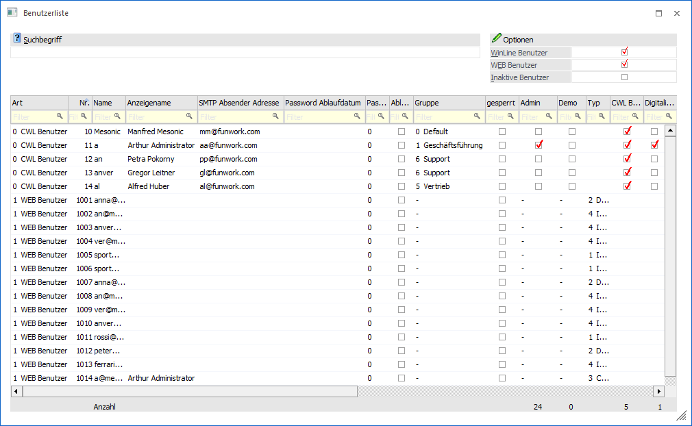
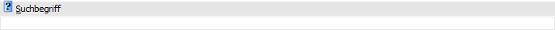
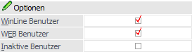
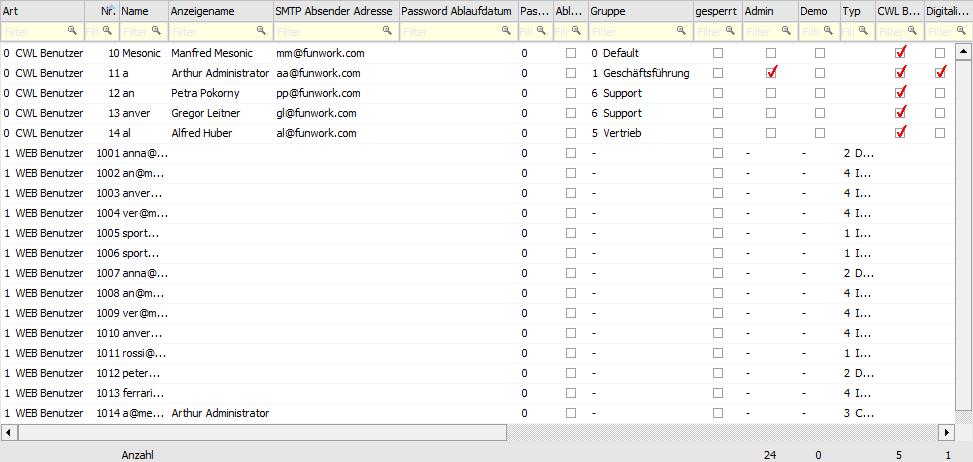
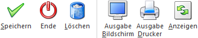

Über den Menüpunkt…
1 Benutzer
1 Benutzerliste
… kann eine Liste aller Benutzer aufgerufen werden. Dabei ist der Status jedes Benutzers ersichtlich und somit kann - in Verbindung mit der WinLine WEB Edition - eine "Schnellwartung" von Benutzern durchgeführt werden.

Standardmäßig werden mit dem Aufruf des Menüpunktes alle WinLine Benutzer angezeigt. Diese Anzeige kann aber individuell beeinflusst werden.
Suchbegriff

Ø Suchbegriff
Wird an dieser Stelle ein Eintrag vorgenommen, so werden nur die Benutzer angezeigt, welche dem Suchkriterium entsprechen. Zusätzlich kann mit den folgenden Checkboxen entschieden werden, welche Benutzerarten angezeigt werden sollen.
Optionen

Ø WinLine Benutzer
Ist diese Checkbox aktiv, dann werden die WinLine Benutzer angezeigt. Mit diesen Benutzern kann nur in der WinLine gearbeitet werden.
Ø WEB Benutzer
Ist diese Checkbox aktiv, dann werden die WEB Benutzer angezeigt. WEB Benutzer können gleichzeitig auch WinLine-Benutzer sein, können aber auch Benutzer sein, die sich einmal in der WEB Edition angemeldet haben und nur die Seiten der WEB Edition durchsurft haben.
Ø Inaktive Benutzer
Mit dieser Option können Benutzer angezeigt werden, bei denen in der Benutzeranlage die Option "inaktiv" gesetzt wurde. Über die Benutzerliste können inaktive Benutzer wieder "reaktiviert" werden (sofern die Benutzerlizensierung das erlaubt). Dazu müssen in weiterer Folge die notwendigen Benutzertypen eingestellt werden.
Tabelle "Benutzer"

In der Tabelle "Benutzer" werden alle Benutzer gemäß der getroffenen Selektion angezeigt. Zusätzlich wird unterhalb der Tabelle eine Summenzeile pro Benutzertyp ausgewiesen.
Ø Art
Hier wird angezeigt, um welche Art von Benutzern es sich handelt. Abhängig von der Art können nur bestimmte Eingabefelder bearbeitet werden.
Ø Nr.
In diesem Feld wird die Benutzernummer angezeigt. Benutzernummern kleiner 1000 sind den WinLine -Benutzern vorbehalten, für die WEB Benutzer sind normalerweise die Nummern größer 1000 vorgesehen.
Ø Name
Für WinLine Benutzer kann der Name (Login) beliebig vergeben werden. Für WEB Benutzer muss eine E-Mail-Adresse hinterlegt werden. Hier prüft das Programm, ob die eindeutigen Kennzeichen einer E-Mail-Adresse (@ und zumindest ein Punkt) vorhanden sind - eine E-Mail-Adresse muss demnach zumindest aus Name@Domäne.TopLevelDomain bestehen.
Ø Anzeigename
Hier kann der Name des Benutzers eingegeben werden, der im WEB bzw. der WinLine angezeigt werden soll.
Ø SMTP Absender Adresse
Wenn Mails via SMTP versendet werden, dann kann hier die Absenderadresse hinterlegt werden. Es ist allerdings nur bei WinLine Benutzer sinnvoll, hier einen Eintrag vorzunehmen. Die Absenderadressen für die WEB Edition werden über die Mailoptionen der WinLine gesteuert.
Ø Passwort Ablaufdatum
Hier wird das Ablaufdatum des Passworts angezeigt bzw. kann auch verändert werden.
Ø Passwort Ablaufzeit
Hier kann der Intervall bestimmt werden, nach dem das Passwort erneuert werden muss.
Ø Ablaufdatum erneuern
Ist die Checkbox aktiv, kann im Feld "Passwort Ablaufzeit" eingegeben werden, nach wie vielen Tagen das Passwort erneut eingegeben werden muss.
Ø Gruppe
Die Gruppe (Systemgruppe) kann nur bei WinLine Benutzern verändert werden.
Achtung
Die Gruppenzuordnung ist ein wichtiger Bestandteil für die Gestaltung der Berechtigungsprofile.
Ø Gesperrt
Ist diese Checkbox aktiviert, dann kann sich dieser Benutzer nicht mehr in der WinLine bzw. der WEB Edition anmelden.
Hinweis
Diese Checkbox wird automatisch aktiviert, wenn der Benutzer 3 Mal ein falsches Passwort beim Einstieg in die WinLine bzw. WEB Edition eingegeben hat. Erst wenn die Checkbox von einem Administrator wieder deaktiviert wird, kann sich der Benutzer wieder anmelden.
Ø Admin
Diese Checkbox kann nur bei WinLine Benutzern aktiviert werden und weist den Benutzer Administratorenrechte in der WinLine zu.
Ø Demo
Diese Checkbox kann nur bei WinLine -Benutzern aktiviert werden und weist den Benutzer als Demo-Benutzer der WinLine aus - d.h. der Benutzer kann alle Programme öffnen (auch die, für die keine Lizenz vorhanden ist).
Ø Typ
Der Typ des Benutzers kann nur bei WEB Benutzern vergeben werden, wobei mit dieser Einstellung festgelegt wird, welche Programmteile der Benutzer in der WEB Edition bearbeiten darf. Dabei gibt es folgende Unterscheidungen:
ü 1 - Interessent
Der Benutzer
ist noch keine Kunde, hat aber im WEB eine Erstanmeldung durchgeführt.
ü 2 - Debitor
Der Benutzer ist
gleichzeitig ein registrierter Kunde (kann einem Personenkonto der WinLine
zugeordnet werden).
ü 3 - CWL-Benutzer
Der Benutzer
ist gleichzeitig ein Benutzer, der auch die WinLine bearbeiten darf.
ü 4 - Interner Mitarbeiter
Der
Benutzer ist gleichzeitig in der WinLine als Arbeitnehmer oder als Vertreter
angelegt.
ü 5 - SMART Benutzer
Ein
SMART-Benutzer ist ein Benutzer, der in der WEB Edition auf eigens definierte
Datenbereiche zugreifen kann (wobei hier nur Auswertungen möglich sind). Dabei
ist der Benutzer online, hat also immer alle aktuellen Daten zur Verfügung.
Ø CWL Benutzer (nur für WinLine Benutzer)
Der Benutzer kann gemäß der vorhandenen Lizenz und der restlichen Einstellungen mit der WinLine arbeiten.
Ø Digitalisierung/CRM Benutzer (nur für WinLine Benutzer)
Der Benutzer kann den Programmbereich des CRMs innerhalb der WinLine (Desktop-Version) benutzen.
Ø Konten einschränken
Mit dieser Option wird gesteuert, ob der Benutzer alle Konten sehen darf, oder nur die, bei denen er als Vertreter hinterlegt ist. Eine weiterführende Einstellung ist nur in der Benutzeranlage möglich.
Ø Kassen Benutzer
Wird diese Checkbox aktiviert, so können die Funktionen der WinLine KASSE (Desktop-Version) genutzt werden.
Ø MWL Benutzer
Wenn diese Checkbox aktiviert wird, dann kann der Benutzer auch die Multiplattform WinLine aufrufen. Die Aktivierung ist allerdings nur dann möglich, wenn auch ein WinLine Server installiert wurde.
Was in der Multiplattform WinLine getan werden darf ist von den folgenden Typen abhängig:
ü CWL Benutzer
ü Digitalisierung/CRM Benutzer
ü Kasse Benutzer
Achtung
Für einen WinLine mobile-Benutzer muss immer ein Passwort hinterlegt werden. Des Weiteren ist die Nutzung eines WinLine 64-Bit-Servers ratsam!
Ø EWL Benutzer
Wenn diese Checkbox aktiviert wird, dann kann der Benutzer auch die EWL (Enterprise Connect) aufrufen. Dafür muss auch eine entsprechende Lizenz vorhanden sein.
Ø WinLine SMART Benutzer
Mit dieser gesetzten Checkbox steht dem Benutzer über die WinLine mobile das SMART Cockpit zur Verfügung, welches alle Funktionen beinhaltet, die dem WinLine SMART Benutzer zur Verfügung stehen. Dafür muss auch eine entsprechende Lizenz vorhanden sein.
Ø CWL Benutzer Name (nur für WEB Benutzer)
Wenn bei Typ "3 - CWL Benutzer" ausgewählt wurde, dann kann in diesem Feld der Benutzername in der WinLine eingetragen werden. Durch Drücken der F9-Taste kann nach allen angelegten WinLine Benutzern gesucht werden.
Ø Sprache (nur für WEB Benutzer)
Aus der Auswahlbox kann die Sprache gewählt werden, in welcher der Benutzer die WEB Edition bearbeiten soll. Wenn der Benutzer sich selbst anlegt, wird die Sprache über den ersten Bildschirm der WEB Edition gesteuert.
Ø Mandant
Aus der Auswahllistbox kann der Mandant gewählt werden, auf den der Benutzer in der WEB Edition zugreifen soll. Wenn der Benutzer sich selbst anlegt, wird der Mandant über den ersten Bildschirm der WEB Edition gesteuert.
Ø Konto
Wenn ein Benutzer über die WEB Edition eine Erstanmeldung durchführt bzw. eine Bestellung durchführt, dann wird der Benutzer automatisch einer Kundennummer (Interessentennummer) zugeordnet. Diese Zuordnung kann verändert werden (weil der Benutzer ein Kunde ist), wobei über die Matchcode-Funktion nach allen angelegten Personenkonten gesucht werden kann.
Ø Laufkunde
Bei den Benutzertypen "Interessent", "CWL-Benutzer" und "Interner Mitarbeiter" kann hier eine Kontonummer eingetragen werden, aus denen im WEB dann die Standardinformationen (wie Preisliste etc.) geholt werden.
Ø Arbeitnehmer
Wenn der Benutzer als "Interner Mitarbeiter" angelegt wurde, kann hier die Arbeitnehmernummer eingetragen werden, unter welcher der Benutzer im WinLine LOHN angelegt ist.
Ø Vertreter
Wenn der Benutzer als "Interner Mitarbeiter" angelegt wurde, kann hier die Vertreternummer eingetragen werden, unter welcher der Benutzer in der WinLine FAKT angelegt ist. Über die Matchcode-Funktion kann nach allen angelegten Vertretern gesucht werden. Weiterführende Einstellungen dazu können in der Benutzeranlage durchgeführt werden.
Inaktiv setzen eines Benutzers
Wenn ein aktiver Benutzer inaktiv werden soll, müssen alle Häkchen bei dem aktiven Benutzer entfernt und die Benutzerliste gespeichert werden.
Buttons

Ø Speichern
Durch Anklicken des Buttons "Speichern" bzw. der Taste F5 werden alle vorgenommenen Einstellungen gespeichert und Löschvorgänge durchgeführt.
Ø Ende
Durch Drücken des Buttons "Ende" bzw. der Taste ESC wird das Fenster geschlossen und nicht gespeicherte Eingaben verworfen.
Ø Löschen
Durch Anklicken des "Löschen"-Buttons bzw. der Taste Entf wird der aktuell aktivierte Benutzer als gelöscht markiert, d.h. die Zeile wird mit blauer Schrift dargestellt. Erst durch Anklicken des Buttons "Speichern" wird der Benutzer anschließend endgültig gelöscht.
Hinweis
Solange der Eintrag "blau" markiert ist, kann das Löschen jederzeit durch Drücken der Taste Einfg oder durch Beenden des Programmbereichs ("Ende"-Button oder ESC-Taste) rückgängig gemacht werden.
Alternativ zum Löschen kann der Benutzer auch auf inaktiv gesetzt werden. Hierzu muss die entsprechende Option in der Benutzeranlage aktiviert werden.
Ø Ausgabe Bildschirm
Durch Anklicken des Buttons wird eine Liste aller Benutzer am Bildschirm ausgegeben, welche aktuell in der Tabelle angezeigt werden.
Ø Ausgabe Drucker
Durch Anklicken des Buttons wird eine Liste aller Benutzer an den Drucker bzw. in den Spooler übergeben, welche aktuell in der Tabelle angezeigt werden.
Ø Anzeigen
Durch Anwahl des "Anzeigen"-Buttons werden die Benutzer gemäß den vorgenommenen Einstellungen in der Tabelle aufgelistet.